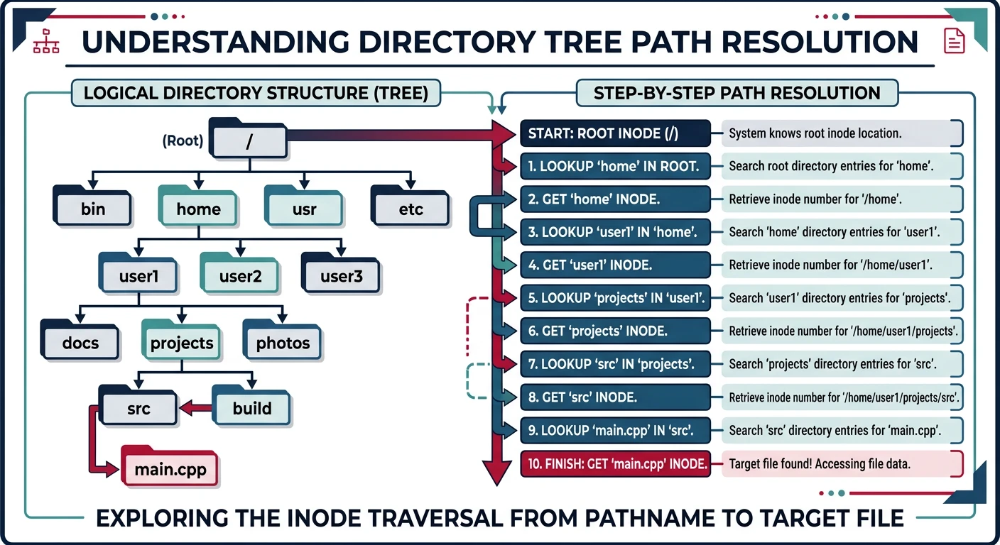
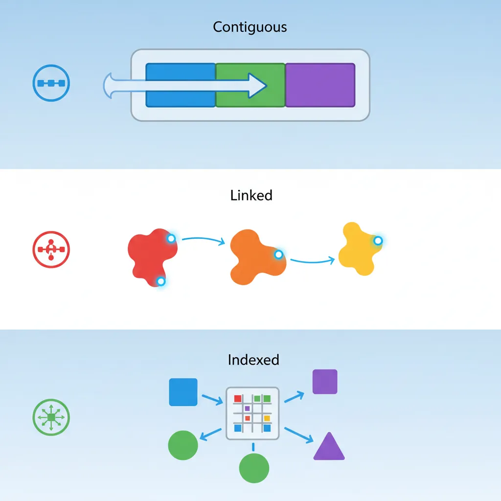
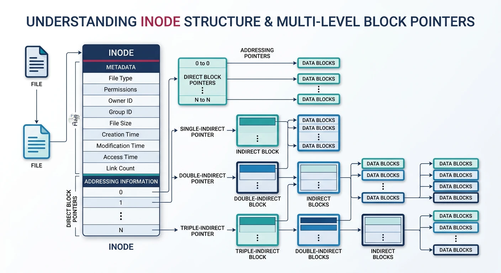
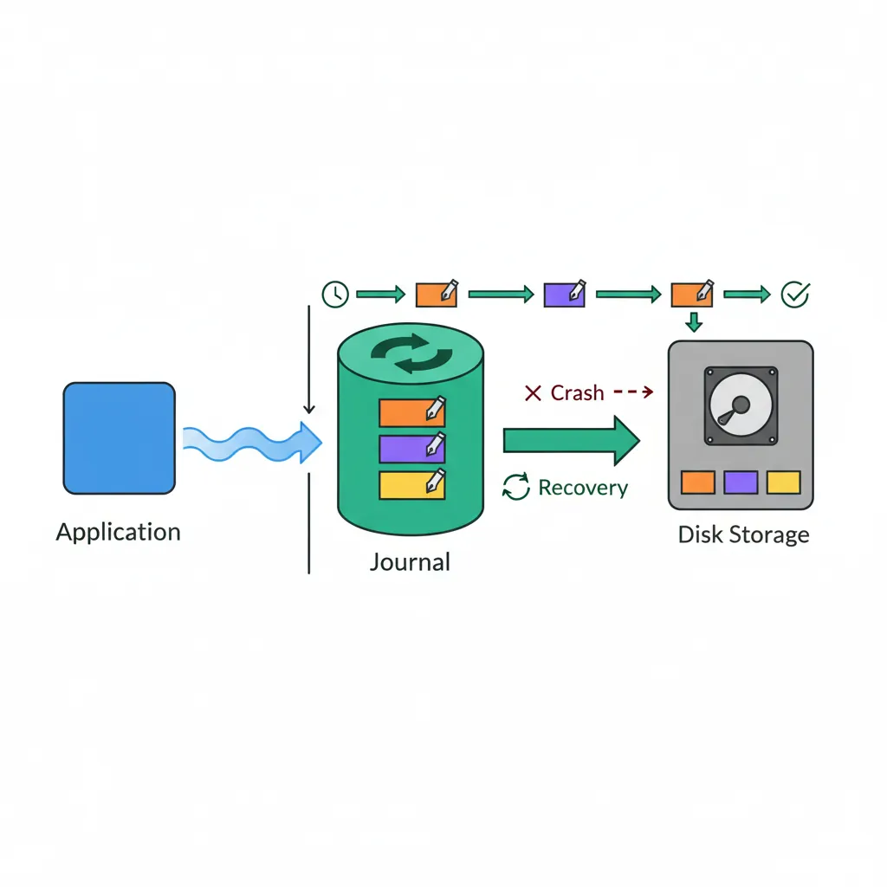

File systems provide the abstraction for persistent storage. They organize data on disk, manage metadata, and ensure data integrity through mechanisms like journaling.
Series Context: This is Part 17 of 24 in the Computer Architecture & Operating Systems Mastery series. We transition from memory management to persistent storage.
The Persistent Challenge: How does the OS turn a spinning magnetic platter or flash chips into a reliable hierarchical file system? And how does it survive sudden power loss?
File Concepts
A file is an abstraction for persistent storage—a named collection of related data with associated metadata.
File attributes: every file carries metadata including name, size, timestamps (ctime/mtime/atime), ownership, and permission bits
File Attributes
File Metadata:
══════════════════════════════════════════════════════════════
Core Attributes:
• Name: Human-readable identifier (e.g., "report.pdf")
• Type: File extension or magic number
• Location: Pointer to data blocks on disk
• Size: Current file size in bytes
Timestamps:
• Created (ctime): When file was created
• Modified (mtime): Last data modification
• Accessed (atime): Last read/access
Permissions:
• Owner (user ID)
• Group (group ID)
• Mode (read/write/execute bits)
$ ls -la report.pdf
-rw-r--r-- 1 wasil users 24576 Jan 15 10:30 report.pdf
││││││││││ │ │ │ │ │ │
││││││││││ │ │ │ │ │ └─ Name
││││││││││ │ │ │ │ └───── mtime
││││││││││ │ │ │ └─────────── Size
││││││││││ │ │ └───────────────── Group
││││││││││ │ └─────────────────────── Owner
││││││││││ └───────────────────────── Links
└─────────┘─────────────────────────── Permissions
Directory Structure
Directories are special files that map names to file metadata. They create the hierarchical namespace.

Directory path resolution: each directory maps names to inode numbers, requiring multiple disk reads to traverse from root to target file
Directory as a File:
══════════════════════════════════════════════════════════════
A directory contains entries mapping names → inodes:
/home/wasil/documents/
┌────────────────────────────────────────┐
│ Name │ Inode Number │
├──────────────────┼────────────────────┤
│ . │ 12345 │ ← This directory
│ .. │ 12300 │ ← Parent directory
│ report.pdf │ 12350 │
│ notes.txt │ 12351 │
│ project/ │ 12400 │ ← Subdirectory
└──────────────────┴────────────────────┘
Path Resolution: /home/wasil/report.pdf
━━━━━━━━━━━━━━━━━━━━━━━━━━━━━━━━━━━━━━━━━━━━━━━━━━━━━━━━━━━━
1. Start at root inode (inode 2 on most systems)
2. Read root directory, find "home" → inode 100
3. Read inode 100, get data blocks, find "wasil" → inode 12300
4. Read inode 12300, find "report.pdf" → inode 12350
5. Read inode 12350 to get file metadata and data block pointers
Each step requires disk I/O! Caching is crucial.
Hard Links vs Symbolic Links: Hard links are additional directory entries pointing to the same inode. Symbolic (soft) links are files containing a path string. Hard links can't cross file systems; symlinks can.
File Allocation Methods
How does the file system map file data to disk blocks? Three classic approaches.

File allocation methods: contiguous stores blocks sequentially, linked chains blocks via pointers, and indexed uses an index block for direct access
1. CONTIGUOUS ALLOCATION:
══════════════════════════════════════════════════════════════
File A: Start=10, Length=4
[ ] [ ] [ ] ... [A0][A1][A2][A3] [ ] [ ] ...
10 11 12 13
✓ Simple - just store start + length
✓ Fast sequential and random access
✗ External fragmentation (like memory)
✗ File can't grow easily
Used by: CD-ROMs, DVDs (files don't change)
2. LINKED ALLOCATION:
══════════════════════════════════════════════════════════════
Each block contains pointer to next block:
[A0|25] ──→ [A1|42] ──→ [A2|18] ──→ [A3|nil]
block 10 block 25 block 42 block 18
✓ No external fragmentation
✓ Files can grow easily
✗ Random access is slow (must traverse list)
✗ Pointer space overhead
✗ One bad block breaks the chain
Variation: FAT (File Allocation Table) keeps all pointers
in a table in memory for faster access.
3. INDEXED ALLOCATION:
══════════════════════════════════════════════════════════════
Index block contains pointers to all data blocks:
Index Block (block 50):
┌─────────────┐
│ [0] → 10 │
│ [1] → 25 │ ──────→ Data blocks scattered anywhere
│ [2] → 42 │
│ [3] → 18 │
└─────────────┘
✓ Fast random access (direct to any block)
✓ No external fragmentation
✗ Index block overhead for small files
✗ Limited file size by index block size
Solution: Multi-level index (used by Unix/ext4)
Inodes & Metadata
The inode (index node) is Unix's solution for storing file metadata and block pointers.

Unix inode: 12 direct block pointers for small files, plus single/double/triple indirect pointers enabling files up to 4 TB
Inode Structure
Unix Inode (typical 256 bytes):
══════════════════════════════════════════════════════════════
┌─────────────────────────────────────────────────────┐
│ File type and permissions (mode) │
│ Owner UID, Group GID │
│ File size in bytes │
│ Timestamps: atime, mtime, ctime │
│ Link count (number of hard links) │
├─────────────────────────────────────────────────────┤
│ Direct block pointers [0-11] │ ─→ 12 blocks
├─────────────────────────────────────────────────────┤
│ Single indirect pointer │ ─→ +1024 blocks
├─────────────────────────────────────────────────────┤
│ Double indirect pointer │ ─→ +1M blocks
├─────────────────────────────────────────────────────┤
│ Triple indirect pointer │ ─→ +1G blocks
└─────────────────────────────────────────────────────┘
Multi-level Indexing (4KB blocks, 4-byte pointers):
━━━━━━━━━━━━━━━━━━━━━━━━━━━━━━━━━━━━━━━━━━━━━━━━━━━━━━━━━━━━
Direct: 12 × 4KB = 48 KB
Single: 1024 × 4KB = 4 MB
Double: 1024² × 4KB = 4 GB
Triple: 1024³ × 4KB = 4 TB
Small files (most files!) use only direct blocks → fast!
The VFS is an abstraction layer allowing the kernel to support multiple file system types with a uniform interface.
VFS Architecture:
══════════════════════════════════════════════════════════════
User Space
───────────────────────────────────────────────────
open() read() write() close() stat()
───────────────────────────────────────────────────
Kernel Space
│
┌────────┴────────┐
│ VFS │ ← Common interface
└────────┬────────┘
│
┌───────────┼───────────┐
│ │ │
┌───┴───┐ ┌────┴───┐ ┌───┴────┐
│ ext4 │ │ NTFS │ │ NFS │ ← Filesystem drivers
└────────┘ └─────────┘ └─────────┘
│ │ │
▼ ▼ ▼
Local Local Network
Disk Disk Server
VFS Objects:
━━━━━━━━━━━━━━━━━━━━━━━━━━━━━━━━━━━━━━━━━━━━━━━━━━━━━━━━━━━━
• superblock: Represents mounted filesystem
• inode: File metadata (in-memory)
• dentry: Directory entry (cached paths)
• file: Open file (per-process)
ext4 File System
ext4 (fourth extended filesystem) is the default Linux filesystem, evolved from ext2/ext3.
ext4 Features:
══════════════════════════════════════════════════════════════
1. EXTENTS (instead of indirect blocks):
Contiguous block ranges in single descriptor
[start_block, length] vs thousands of pointers
2. BLOCK GROUPS:
Disk divided into groups for locality
Each group has own inode table, bitmap, data blocks
3. DELAYED ALLOCATION:
Don't allocate blocks until flush time
Better placement decisions, reduced fragmentation
4. JOURNALING (see below)
5. Limits:
• Max file size: 16 TB
• Max volume size: 1 EB (exabyte)
• Max filename: 255 bytes
NTFS (New Technology File System) is Windows' primary filesystem since Windows NT.
NTFS Key Concepts:
══════════════════════════════════════════════════════════════
1. MASTER FILE TABLE (MFT):
• Every file/directory is an MFT record
• Record 0 = $MFT itself
• Each record typically 1KB
• Contains attributes (name, data, timestamps)
2. EVERYTHING IS AN ATTRIBUTE:
• $STANDARD_INFORMATION - timestamps, permissions
• $FILE_NAME - name(s) and parent reference
• $DATA - actual file content
• $INDEX_ROOT - B-tree for directories
3. RESIDENT vs NON-RESIDENT:
• Small files (<700 bytes) stored IN the MFT record
• Larger files have data runs pointing to clusters
4. FEATURES:
• Journaling (transaction log)
• ACLs (Access Control Lists)
• Compression and encryption (EFS)
• Alternate Data Streams (multiple $DATA attributes)
• Hard links and symbolic links
Journaling
Journaling protects filesystem consistency during crashes. Changes are logged before applied.

Write-ahead logging: changes are recorded in the journal before being applied to disk, allowing recovery to a consistent state after a crash
Write-Ahead Logging
The Problem Without Journaling:
══════════════════════════════════════════════════════════════
Creating a file requires multiple disk writes:
1. Allocate inode
2. Initialize inode
3. Add directory entry
4. Update directory inode
5. Update free block/inode bitmaps
Crash between steps → INCONSISTENT state!
• Orphan inodes (allocated but not in any directory)
• Directory points to unallocated inode
• Blocks marked used but unreferenced
Without journaling: Run fsck for hours to repair!
Journaling Solution:
━━━━━━━━━━━━━━━━━━━━━━━━━━━━━━━━━━━━━━━━━━━━━━━━━━━━━━━━━━━━
1. Write intent to JOURNAL
2. Apply changes to actual locations
3. Mark journal entry complete
┌───────────┐ ┌───────────┐ ┌───────────┐
│ Write │ → │ Apply │ → │ Commit │
│ Journal │ │ Changes │ │ (delete) │
└───────────┘ └───────────┘ └───────────┘
Crash recovery:
• Incomplete journal entry → discard (undo)
• Complete entry, changes not applied → replay (redo)
Recovery in seconds, not hours!
Journal Modes: ext4 supports: journal (safest, slowest—logs data+metadata), ordered (default—data written before metadata logged), writeback (fastest—metadata only, data may be stale).
Conclusion & Next Steps
File systems are fundamental to how computers organize persistent data. We've covered:
File Concepts: Attributes, metadata, and permissions
Directory Structure: Hierarchical namespace via directory entries
Allocation Methods: Contiguous, linked, and indexed approaches
Inodes: Unix's metadata and block pointer structure
VFS: Kernel abstraction for multiple filesystem types
Journaling: Crash consistency through write-ahead logging
Key Insight: File systems are all about managing two things: metadata (inodes, directory entries) and data blocks. Journaling ensures these stay consistent even through crashes.
Next in the Series
In Part 18: I/O Systems & Device Drivers, we'll explore how the OS communicates with hardware devices—interrupts, DMA, and disk scheduling algorithms.